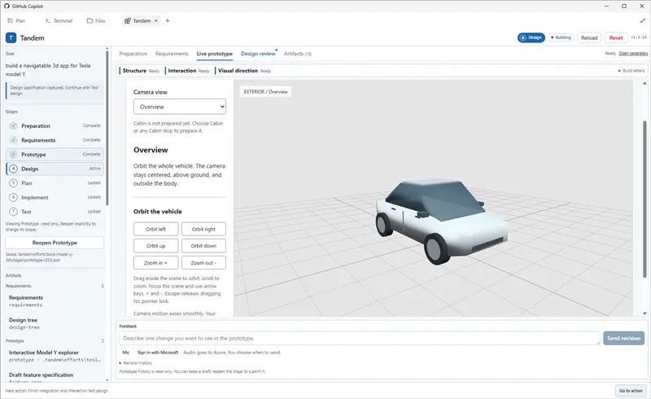

01 / Traditional development
Make expectations explicit before implementation begins.
02 / The code-first approach
A fast start makes the application itself the first thing to review.
A short request.Many unstated expectations.
“Can I undo deletion?”“What happens to my data?”
03 / The intent gap
One short request. Two reasonable interpretations.
04 / Four ways the gap survives
The missing signal is agreement about the outcome.
Concrete reactions come after implementation choices are embedded.
Long specs make users reconstruct the experience in their heads.
Local changes can lose the original intent across a long task.
Unit tests are useful. Shared assumptions still need user validation.
Internal consistency is not the same as shared intent.
05 / Tandem · Two stages
Long docs demand mental reconstruction. Visuals make mismatches easier to see.

Clarify enough for a useful prototype.
Play. Spot a mismatch. Ask and clarify.Confirm; repeat as needed.
Confirmed scope + explicit open questions.Not just what the prototype happened to do.
06 / Stage 2 · Spec-anchored development
Linked visual artifacts stay the review surface—not a document left behind.
Implementer builds and validates whole journeys.Reviewer checks Design conformance and over-engineering.
Reviewer reports; it does not edit code.A new implementation cycle requires user confirmation.